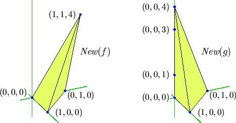

Next: 2.ii. The Polyhedral Homotopy Algorithm
Up: 2. Polynomial Systems
2.i. Sparse Polynomial Systems
- The BKK Bound
- An Example
Perhaps the most obvious structure of a system of n
polynomials in n variables
|
f1(x1,...,xn)
=
f2(x1,...,xn)
= ... =
fn(x1,...,xn)
= 0 ,
|
(2.1) |
is the list of total degrees of the polynomials
f1, f2, ..., fn.
For such a system, we have the degree or Bézout upper bound, which is a
consequence of the refined Bézout Theorem of Fulton and
MacPherson [Fu1, §1.23].
Theorem 2.1 (Bézout Bound)
The system (
2.1), where the polynomial
fi has total degree
di := deg
fi, has at most
d1d2...
dn
isolated complex solutions.
The Bézout bound on the number of real solutions is sharp.
For example, if
|
fi = (xi-1)
(xi-2)...(xi-di) |
(2.2) |
then the system (2.1) has
d1d2...dn
real solutions.
The reader is invited to construct systems with the minimum possible
number (0 or 1) of real solutions.
A system of polynomial equations with only simple solutions, but with fewer
solutions than the Bézout bound is called deficient.
For example, fewer monomials in the polynomials lead to fewer solutions.
We make this idea more precise.
A monomial (or rather its exponent vector) is a point of
Nn.
The convex hull of the monomials in f
is its Newton polytope,
New(f), a polytope with integral vertices.
The terms of f are indexed by the lattice points
in its Newton polytope.
Figure 1 displays the monomials (dots)
and Newton polytopes of the polynomials
| f | = |
1 + x - y + xyz4
|
| g | = |
1 + x - y + 3z -
z3 +
2z4
|
Figure 1:
Newton Polytopes of f and g.
|  |
Subsections
- 2.i.a. The BKK Bound
- 2.i.b. An Example
Next: 2.ii. The Polyhedral Homotopy Algorithm
Up: 2. Polynomial Systems